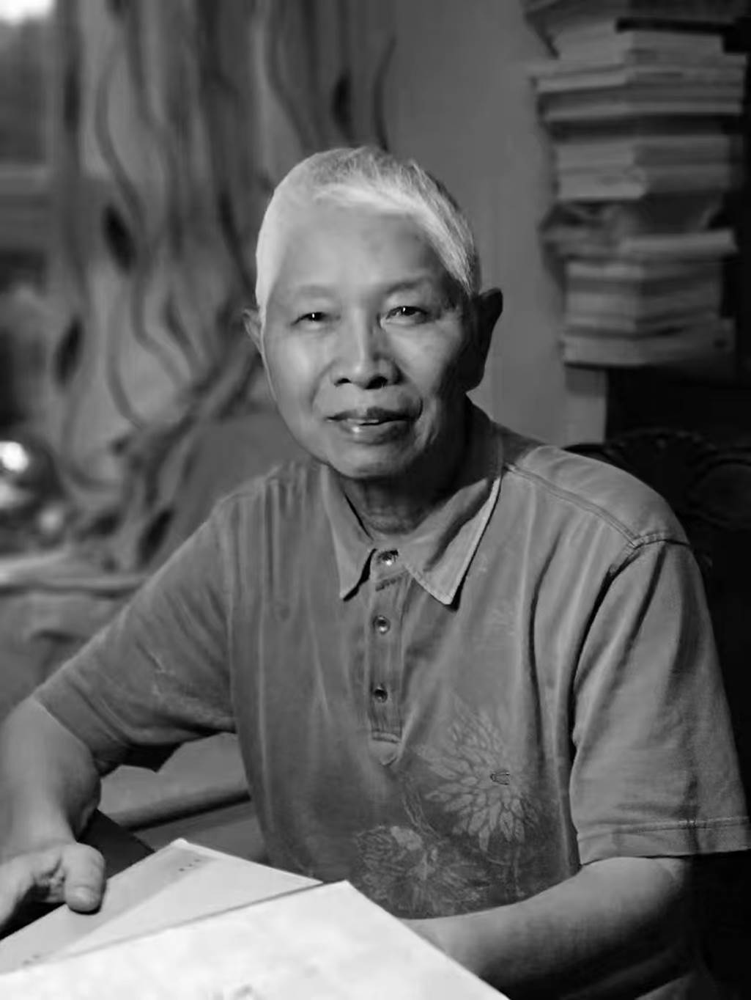

学院通知 · 科研创新
讣 告
发布时间：2025-02-04
著名敦煌学家、文献学家、语言学家和文学史家，四川大学文科杰出教授、教育部人文社科重点研究基地四川大学中国俗文化研究所创所所长、名誉所长项楚先生，因病医治无效，于 2025 年 2 月 4 日 7 时 30 分在成都逝世，享年 85 岁。 项楚先生，浙江永嘉县人， 1940 年出生。 1962 年毕业于南开大学中文系，同时考取四川大学中国文学史专业研究生，师从庞石帚教授攻治六朝唐宋文学。研究生毕业后在甘洛军垦农场劳动两年， 1970 年到成都西北中学任教。 1976 年参加《汉语大字典》编写组， 1980 年调入四川大学， 1986 年晋升教授， 1990 年由国务院学位委员会批准为博士生导师。 项楚先生曾任 教育部社会科学委 员 会委 员 、国 务 院学位委 员 会学科 评议组 成 员 及召集人、国家古籍整理出版 规 划 领导 小 组 成 员、高等学校古籍整理委员会成员 、中国敦煌吐 鲁 番学会副会 长 、四川省社会科学杰出 贡 献 专 家、四川大学 “ 985 工程 ” 文化 遗产 与文化互 动创 新基地首席科学家、四川大学中国古典文献学（ 国家重点学科 ）、中国古代文学、 汉语 言文字学三个学科的学 术带头 人和博士生导师。 项楚先生国学根柢深厚，熟读佛典和四部典籍，精于校勘考据，擅长融会贯通，其治学熔语言、文献、文学、宗教于一炉，致广大而尽精微，风格独具，特色鲜明。尤其在敦煌学和佛教文学研究方面，硕果累累，成就卓越，享誉海内外。其成果曾获得中国社科院青年语言学家奖一等奖，中国高校人文社科科学研究优秀成果奖第一、二、五届一等奖，首届思勉原创奖。 项楚先生毕生潜心科研与教学，培养了大批优秀学术人才，为中国语言文学学科发展和人才培养做出了巨大贡献。先生淡泊名利，品德高洁，德艺双馨，为举世之楷模。 贤哲其萎，山川同悲。 项楚先生千古！ 四川大学 2025 年 2 月 4 日 四川大学项楚先生治丧小组 组长：曹顺庆 副组长：傅其林 罗鹭 成员（按姓氏笔画为序）： 丁淑梅 尹富 刘亚丁 刘长东 刘郝霞 何剑平 何江南 李菲 孙尚勇 张涌泉 张弘 张朝富 张勇 周裕锴 周俊勋 顾满林 银浩 蒋宗福 谭伟 操慧 戴莹莹 联系人：何剑平 18011591255 李菲 13980877611 陈羲 18048564321 备注： 1. 唁电唁函请发送到邮箱： suwenhua.scu@163.com 。 2. 项楚先生追悼会和告别仪式定于 2025 年 2 月 6 日上午 9:00 在成都东郊殡仪馆（锦江区三圣街办大安桥路 639 号）举行。 3. 参加追悼会的同志可于 2 月 6 日早上 8 点搭乘校车，江安校区上车地点在江安花园门口，望江校区上车地点在望江体育馆旗杆处。
